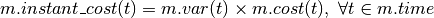

lms2.economic.cost.def_linear_dyn_cost¶
-
lms2.economic.cost.def_linear_dyn_cost(m, var_name='p')[source]¶ Method for adding a linear dynamic cost associated to variable ‘p’, to a block Final instantaneous cost expression is called “instant_cost”

Parameters: - m – Block
- var_name (str) – Names of the expensive variable
Returns: pyomo Expression